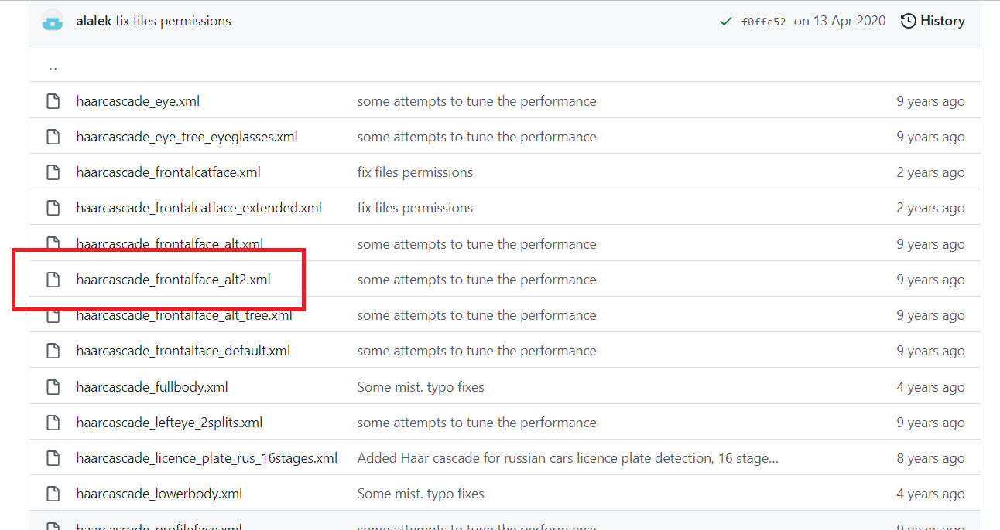
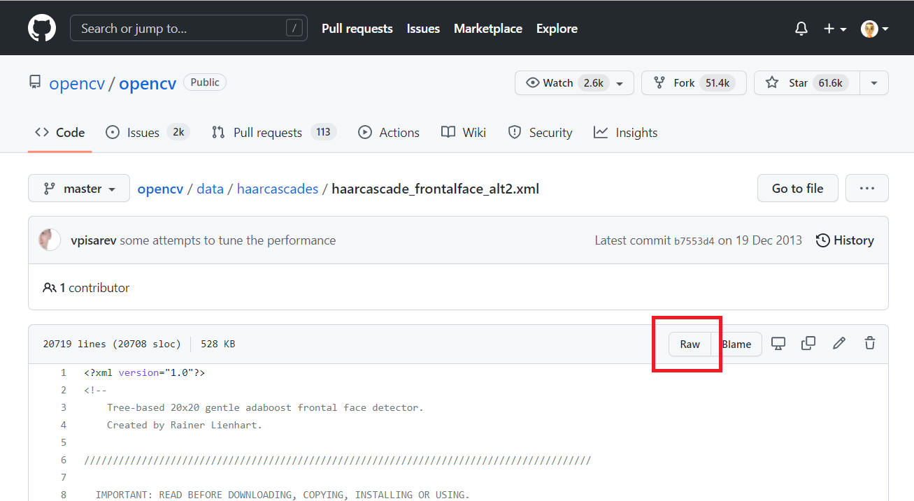
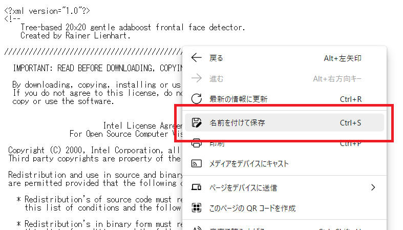
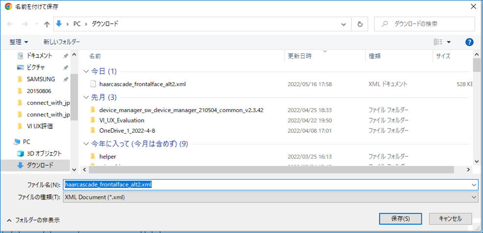

|
NOTE 本ページは i-PRO株式会社 の有志メンバーにより記載されたものです。 本ページの情報は ライセンス に記載の条件で提供されます。 |
OpenCV 関連ファイルを保存する https://github.com/opencv/opencv/tree/master/data/haarcascades から XML ファイルを取得する手順について記載します。
1.
https://github.com/opencv/opencv/tree/master/data/haarcascades をブラウザで開きます。
2.
取得したいファイルをクリックします。ここでは "haarcascade_frontalface_alt2.xml" をクリックします。

3.
[Raw] ボタンをクリックします。

4.
画面上で右クリックを押し、コンテキストメニューから「名前と付けて保存」を選択します。

5.
「名前を付けて保存」ダイアログを表示するので、保存する場所を指定して［保存(S)］ボタンをクリックします。

以上です。
本ページの情報は、特記無い限り下記ライセンスで提供されます。
|
Copyright 2022 i-PRO Co., Ltd. Licensed under the Apache License, Version 2.0 (the "License"); you may not use this file except in compliance with the License. You may obtain a copy of the License at http://www.apache.org/licenses/LICENSE-2.0 Unless required by applicable law or agreed to in writing, software distributed under the License is distributed on an "AS IS" BASIS, WITHOUT WARRANTIES OR CONDITIONS OF ANY KIND, either express or implied. See the License for the specific language governing permissions and limitations under the License. |
| 2022/5/26 | - | 新規作成, | 木下英俊 |
i-PRO - Programming Items トップページ